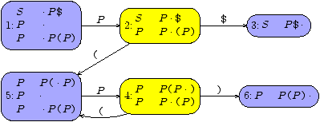

This chapter introduces Frown by means of example.
3.1 Preliminaries: monads
Some elementary knowledge of monads is helpful in order to
use Frown effectively. For the most basic applications, however, one
can possibly do without. This section summarizes the relevant facts.
In Haskell, the concept of a monad is captured by the following
class definition.
| > class Monad m where |
| > return :: a -> m a |
| > (>>=) :: m a -> (a -> m b) -> m b |
| > (>>) :: m a -> m b -> m b |
| > fail :: String -> m a |
| > |
| > m >> n = m >>= const n |
| > fail s = error s
|
|
The essential idea of monads is to distinguish between
computations and values. This distinction is
reflected on the type level: an element of m a represents a
computation that yields a value of type a. The trivial or pure
computation that immediately returns the value a is denoted return a. The operator (>>=), commonly called `bind', combines two
computations: m >>= k applies k to the result of the computation
m. The derived operation (>>) provides a handy shortcut if one is
not interested in the result of the first computation. Finally, the
operation fail is useful for signaling error conditions (a common
thing in parsing).
Framing the concept of a monad as a type class is sensible for at
least two interrelated reasons. First, we can use the same names
(return, `>>=', and fail) for wildly different computational
structures.1 Second, by overloading a function with
the monad class we effectively parameterize the function by
computational structures, that is, we can call the same function with
different instances of monads obtaining different computational
effects.
The following instance declaration (Result.lhs) defines a simple
monad that we will use intensively in the sequel (the monad can be
seen as a simplified term implementation of the basic monad
operations).
| > module Result where |
| > |
| > data Result a = Return a | Fail String |
| > deriving (Show) |
| > |
| > instance Monad Result where |
| > return = Return |
| > Fail s >>= k = Fail s |
| > Return a >>= k = k a |
| > fail = Fail
|
|
In monad speak, this is an exception monad: a computation
in Result either succeeds gracefully yielding a value a
(represented by the term Return a) or it fails with an error message
s (represented by Fail s). That's all we initially need for
Frown: parsing a given input either succeeds producing a semantic
value (sometimes called an attribution) or it fails (hopefully, with a
clear indication of the syntax error).
3.2 Basic features
3.2.1 Pure grammars
Let's start with a simple example. The following complete Frown
source file (Paren1.lg2) defines the language of
well-balanced parentheses. The specification of the grammar is
enclosed in special curly braces `%{ ldots }%'. The remainder
contains Haskell source code, that is, a module header and a function
declaration.
| > module Paren where |
| > import Result |
| > |
| > %{ |
| > |
| > Terminal = '(' | ')'; |
| > |
| > Nonterminal = paren; |
| > |
| > paren : ; |
| > paren : paren, '(', paren, ')'; |
| > |
| > }% |
| > |
| > frown _ = fail "syntax error" |
|
The part enclosed in special curly braces comprises the typical
ingredients of a context-free grammar: a declaration of
the terminal symbols, a declaration of the
nonterminal symbols, and finally the
productions or grammar rules.
In general, the terminal symbols are given by Haskell patterns of the
same type. Here, we have two character patterns of type Char.
Nonterminals are just identifiers starting with a lower-case letter.
By convention, the first nonterminal is also the start symbol of
the grammar (this default can be overwritten, see Sec. 3.2.7).
Productions have the general form n : v_1, ldots, v_k; where n is
a nonterminal and v_1, ..., v_k are symbols. Note that the
symbols are separated by commas and terminated by a semicolon. The
mandatory trailing semicolon helps to identify so-called
є-productions, productions with an empty right-hand
side, such as paren : ;.
As a shorthand, we allow to list several alternative right-hand sides
separated by a vertical bar. Thus, the above productions could have
been written more succinctly as
| > paren : ; |
| > | paren, '(', paren, ')';
|
|
The two styles can be arbitrarily mixed. In fact, it is not even
required that productions with the same left-hand side are grouped
together (though it is good style to do so).
Now, assuming that the above grammar resides in a file called
Paren.g we can generate a Haskell parser by issuing the command
frown Paren.g
This produces a Haskell source file named Paren.hs that contains
among other things the function
| > paren :: (Monad m) => [Char] -> m () ,
|
|
which recognizes the language generated by the start symbol of the
same name. Specifically, if inp is a list of characters, then
paren inp is a computation that either succeeds indicating that
inp is a well-formed parentheses or fails indicating that inp
isn't well-formed. Here is a short interactive session using the
Haskell interpreter Hugs (type hugs Paren.hs at the command line).
| > Paren>> paren "(())()" :: Result () |
| > Return () |
| > Paren>> paren "(())(" :: Result () |
| > Fail "syntax error" |
|
Note that we have to specify the result type of the expressions in
order to avoid an unresolved overloading error. Or to put it
differently, we have to specify the monad, in which the parsing
process takes place. Of course, we are free to assign paren a more
constrained type by placing an appropriate type signature in the
Haskell section of the grammar file:
| > paren :: [Char] -> Result () .
|
|
By the way, since the nonterminal paren carries no semantic value,
the type of the computation is simply Result () where the empty
tuple type `()' serves as a dummy type. In the next section we will
show how to add attributes or semantic values to nonterminals.
Every once in a while parsing fails. In this case, Frown calls a
user-supplied function named, well, frown (note that you must supply
this function). In our example, frown has type
| > frown :: (Monad m) => [Char] -> m a
|
|
The error function frown is passed the remaining input as an
argument, that you can give an indication of the location of the
syntax error (more on error reporting in
Sec. 3.3). Note that frown must be polymorphic
in the result type.
Remark 1
For those of you who are knowledgable and/or interested in
LR parsing, Fig. 3.1 displays the Haskell file that is
generated by frown Paren.g3. For each state i of the underlying
LR(
0)
automaton, displayed in Fig. 3.2,
there is one function called parse_i. All these functions take two
arguments: the remaining input and a stack that records the
transitions of the LR(
0)
machine. The reader is
invited to trace the parse of "(())()".
| > module Paren where |
| > import Result |
| > |
| > {- frown :-( -} |
| > |
| > data Stack = Empty |
| > | T_1_2 Stack |
| > | T_2_3 Stack |
| > | T_2_5 Stack |
| > | T_4_5 Stack |
| > | T_4_6 Stack |
| > | T_5_4 Stack |
| > |
| > data Nonterminal = Paren |
| > |
| > paren tr = parse_1 tr Empty >>= (\ Paren -> return ()) |
| > |
| > parse_1 ts st = parse_2 ts (T_1_2 st) |
| > |
| > parse_2 tr@[] st = parse_3 tr (T_2_3 st) |
| > parse_2 ('(' : tr) st = parse_5 tr (T_2_5 st) |
| > parse_2 ts st = frown ts |
| > |
| > parse_3 ts (T_2_3 (T_1_2 st)) = return Paren |
| > |
| > parse_4 ('(' : tr) st = parse_5 tr (T_4_5 st) |
| > parse_4 (')' : tr) st = parse_6 tr (T_4_6 st) |
| > parse_4 ts st = frown ts |
| > |
| > parse_5 ts st = parse_4 ts (T_5_4 st) |
| > |
| > parse_6 ts (T_4_6 (T_5_4 (T_2_5 (T_1_2 st)))) = |
| > = parse_2 ts (T_1_2 st) |
| > parse_6 ts (T_4_6 (T_5_4 (T_4_5 (T_5_4 st)))) |
| > = parse_4 ts (T_5_4 st) |
| > |
| > {- )-: frown -} |
| > |
| > frown _ = fail "syntax error" |
|
Figure 3.1: A Frown generated parser.

Figure 3.2: The LR(0) automaton underlying the parser of Fig. 3.1.
3.2.2 Attributes
Now, let's augment the grammar of Sec. 3.2.1 by semantic
values (Paren2.lg). Often, the parser converts a given input into
some kind of tree representation (the so-called abstract
syntax tree). To represent nested parentheses we simply use binary
trees (an alternative employing n-ary trees is given in
Sec. 4.1).
| > module Paren where |
| > import Result |
| > |
| > data Tree = Leaf | Fork Tree Tree |
| > deriving (Show) |
| > |
| > %{ |
| > |
| > Terminal = '(' | ')'; |
| > |
| > Nonterminal = paren {Tree}; |
| > |
| > paren {Leaf} : ; |
| > {Fork t u} | paren {t}, '(', paren {u}, ')'; |
| > |
| > |
| > }% |
| > |
| > frown _ = fail "syntax error" |
|
Attributes are always given in curly braces. When we declare a
nonterminal, we have to specify the types of its attributes as in
paren {Tree}. The rules of the grammar can be seen as functions from
the right-hand side to the left-hand side. On the right-hand side,
Haskell variables are used to name the values of attributes. The
values of the attributes on the left-hand side are then given by
Haskell expressions, in which the variables of the right-hand side may
occur free. The Haskell expressions can be arbitrary, except that they
must not be layout-sensitive.
In general, a nonterminal may have an arbitrary number of attributes
(see Sec. 4.4 for an example). Note that Frown only
supports so-called synthesized attributes
(inherited attributes can be simulated, however, with the
help of a reader monad, see Sec. 3.2.8, or with functional
attributes, see Sec. 4.2).
The parser generated by Frown now has type
| > paren :: (Monad m) => [Char] -> m Tree .
|
|
The following interactive session illustrates its use.
| > Paren>> paren "(())()" :: Result Tree |
| > Return (Fork (Fork Leaf (Fork Leaf Leaf)) Leaf) |
| > Paren>> paren "(())(" :: Result Tree |
| > Fail "syntax error" |
|
3.2.3 Interfacing with a lexer
The parsers of the two previous sections take a list of characters as
input. In practice, a parser usually does not work on character
streams directly. Rather, it is prefaced by a lexer that first
converts the characters into a list of so-called
tokens. The separation of the lexical analysis from the
syntax analysis usually leads to a clearer design and as a benevolent
side-effect it also improves efficiency (Sec. 3.4.2
shows how to combine lexing and parsing in Frown, though).
A simple token type is shown in Fig 3.3
(Terminal1.lhs). (Note that the type comprises more constructors
than initially needed.)
| > module Terminal where |
| > import Maybe |
| > |
| > data Op = Plus | Minus | Times | Divide |
| > deriving (Show) |
| > |
| > name :: Op -> String |
| > name Plus = "+" |
| > name Minus = "-" |
| > name Times = "*" |
| > name Divide = "/" |
| > |
| > app :: Op -> (Int -> Int -> Int) |
| > app Plus = (+) |
| > app Minus = (-) |
| > app Times = (*) |
| > app Divide = div |
| > |
| > data Terminal = Numeral Int |
| > | Ident String |
| > | Addop Op |
| > | Mulop Op |
| > | KWLet |
| > | KWIn |
| > | Equal |
| > | LParen |
| > | RParen |
| > | EOF |
| > deriving (Show) |
| > |
| > ident, numeral :: String -> Terminal |
| > ident s = fromMaybe (Ident s) (lookup s keywords) |
| > numeral s = Numeral (read s) |
| > |
| > keywords :: [(String, Terminal)] |
| > keywords = [ ("let", KWLet), ("in", KWIn) ]
|
|
Figure 3.3:
The type of terminals (
Terminal1.lhs).
Fig. 3.4 (Lexer.lhs) displays a simple lexer for
arithmetic expressions, which are built from numerals using the
arithmetic operators `+', `-', `*', and `/'.
| > module Lexer (module Terminal, module Lexer) where |
| > import Char |
| > import Terminal |
| > |
| > lexer :: String -> [Terminal] |
| > lexer [] = [] |
| > lexer ('+' : cs) = Addop Plus : lexer cs |
| > lexer ('-' : cs) = Addop Minus : lexer cs |
| > lexer ('*' : cs) = Mulop Times : lexer cs |
| > lexer ('/' : cs) = Mulop Divide : lexer cs |
| > lexer ('=' : cs) = Equal : lexer cs |
| > lexer ('(' : cs) = LParen : lexer cs |
| > lexer (')' : cs) = RParen : lexer cs |
| > lexer (c : cs) |
| > | isAlpha c = let (s, cs') = span isAlphaNum cs in ident (c : s) : lexer cs' |
| > | isDigit c = let (s, cs') = span isDigit cs in numeral (c : s) : lexer cs' |
| > | otherwise = lexer cs
|
|
Figure 3.4:
A simple lexer for arithmetic expressions (
Lexer.lhs).
The following grammar, which builds upon the lexer, implements a
simple evaluator for arithmetic expressions (Calc.lg).
| > module Calc where |
| > import Lexer |
| > import Result |
| > |
| > %{ |
| > |
| > Terminal = Numeral {Int} |
| > | Addop {Op} |
| > | Mulop {Op} |
| > | LParen as "(" |
| > | RParen as ")"; |
| > |
| > Nonterminal = expr {Int} |
| > | term {Int} |
| > | factor {Int}; |
| > |
| > expr {app op v1 v2} : expr {v1}, Addop {op}, term {v2}; |
| > {e} | term {e}; |
| > term {app op v1 v2} : term {v1}, Mulop {op}, factor {v2}; |
| > {e} | factor {e}; |
| > factor {n} : Numeral {n}; |
| > {e} | "(", expr {e}, ")"; |
| > |
| > }% |
| > |
| > frown _ = fail "syntax error" |
|
The terminal declaration now lists patterns of type Terminal. Note
that terminals may also carry semantic values. The single argument of
Numeral, for instance, records the numerical value of the numeral.
When declaring a terminal we can optionally define a shortcut using an
as-clause as, for example, in LParen as "(". The shortcut can be
used in the productions possibly improving their readability.
Here is an example session demonstrating the evaluator.
| > Calc>> lexer "4 * (7 + 1)" |
| > [Numeral 4,Mulop Times,LParen,Numeral 7,Addop Plus,Numeral 1,RParen] |
| > Calc>> expr (lexer "4711") :: Result Int |
| > Return 4711 |
| > Calc>> expr (lexer "4 * (7 + 1) - 1") :: Result Int |
| > Return 31 |
| > Calc>> expr (lexer "4 * (7 + 1 - 1") :: Result Int |
| > Fail "syntax error" |
|
3.2.4 Monadic actions
The expression that determines the value of an attribute is usually a
pure one. It is, however, also possible to provide a monadic action
that computes the value of the attribute. The computation lives
in the underlying parsing monad. Monadic actions are enclosed in `{% ldots }' braces and have type m t where m is the type of the
underlying monad and t is the type of attributes.
As an example, the following variant of the desktop calculator
(MCalc.lg) prints all intermediate results (note that we only list
the changes to the preceeding example).
| > trace :: Op -> (Int -> Int -> IO Int) |
| > trace op v1 v2 = putStrLn s >> return v |
| > where v = app op v1 v2 |
| > s = show v1 ++ name op ++ show v2 ++ "=" ++ show v
|
|
| > expr {% trace op v1 v2} : expr {v1}, Addop {op}, term {v2}; |
| > term {% trace op v1 v2} : term {v1}, Mulop {op}, factor {v2};
|
|
The following session illustrates its working.
| > MCalc>> expr (lexer "4711") |
| > 4711 |
| > MCalc>> expr (lexer "4 * (7 + 1) - 1") |
| > 7+1=8 |
| > 4*8=32 |
| > 32-1=31 |
| > 31 |
| > MCalc>> expr (lexer "4 * (7 + 1 - 1") |
| > 7+1=8 |
| > Program error: user error (syntax error)
|
|
In general, monadic actions are useful for performing `side-effects' (for example,
in order to parse %include directives)
and for interaction with a monadic lexer (see Sec. 3.3.1).
3.2.5 Backtracking parsers
In the previous examples we have encoded the precedences of the
operators (`*' binds more tightly than `+') into the productions
of the grammar. However, this technique soon becomes unwieldy for a
larger expression language. So let's start afresh. The grammar file
shown in Fig. 3.5 (Let1.lg) uses only a single
nonterminal for expressions (we have also extended expressions by
local definitions).
| > module Let where |
| > import Lexer |
| > import Monad |
| > |
| > data Expr = Const Int | Var String | Bin Expr Op Expr | Let Decl Expr |
| > deriving (Show) |
| > |
| > data Decl = String :=: Expr |
| > deriving (Show) |
| > |
| > %{ |
| > |
| > Terminal = Numeral {Int} |
| > | Ident {String} |
| > | Addop {Op} |
| > | Mulop {Op} |
| > | KWLet as "let" |
| > | KWIn as "in" |
| > | Equal as "=" |
| > | LParen as "(" |
| > | RParen as ")"; |
| > |
| > expr {Expr}; |
| > expr {Const n} : Numeral {n}; |
| > {Var s} | Ident {s}; |
| > {Bin e1 op e2} | expr {e1}, Addop {op}, expr {e2}; |
| > {Bin e1 op e2} | expr {e1}, Mulop {op}, expr {e2}; |
| > {Let d e} | "let", decl {d}, "in", expr {e}; |
| > {e} | "(", expr {e}, ")"; |
| > |
| > decl {Decl}; |
| > decl {s :=: e} : Ident {s}, "=", expr {e}; |
| > |
| > }% |
| > |
| > frown _ = fail "syntax error" |
|
Figure 3.5:
An ambiguous grammar (
Let1.lg).
Also note that the grammar has no Nonterminal declaration. Rather,
the terminal symbols are declared by supplying type signatures before
the respective rules. Generally, type signatures are preferable to a
Nonterminal declaration if the grammar is long.
Of course, the rewritten grammar is no longer LALR(k) simply because
it is ambiguous. For instance, `1+2*3' can be parsed as Bin (Const 1) Plus (Bin (Const 2) Times (Const 3)) or as Bin (Bin (Const 1) Plus (Const 2)) Times (Const 3). Frown is also unhappy with the
grammar: it reports six shift/reduce conflicts:
| * warning: 6 shift/reduce conflicts
|
This means that Frown wasn't able to produce a deterministic parser.
Or rather, it produced a deterministic parser by making some arbitrary
choices to avoid non-determinism (shifts are preferred to reductions,
see Sec. 3.2.6). However, we can also instruct Frown to
produce a non-deterministic parser, that is, one that generates all
possible parses of a given input. We do so by supplying the option
--backtrack:
frown --backtrack Let.g
The generated parser expr now has type
| > expr :: (MonadPlus m) => [Terminal] -> m Expr .
|
|
Note that the underlying monad must be an instance of MonadPlus
(defined in the standard library Monad). The list monad and the
Maybe monad are both instances of MonadPlus. The following session
shows them in action.
| > Let>> expr (lexer "1 + 2 - 3 * 4 / 5") :: [Expr] |
| > [Bin (Const 1) Plus (Bin (Const 2) Minus (Bin (Const 3) Times (Bin (Const 4) Divide (Const 5)))),Bin (Const 1) Plus (Bin (Const 2) Minus (Bin (Bin (Const 3) Times (Const 4)) Divide (Const 5))),Bin (Const 1) Plus (Bin (Bin (Const 2) Minus (Bin (Const 3) Times (Const 4))) Divide (Const 5)),Bin (Bin (Const 1) Plus (Bin (Const 2) Minus (Bin (Const 3) Times (Const 4)))) Divide (Const 5),Bin (Const 1) Plus (Bin (Bin (Const 2) Minus (Const 3)) Times (Bin (Const 4) Divide (Const 5))),Bin (Const 1) Plus (Bin (Bin (Bin (Const 2) Minus (Const 3)) Times (Const 4)) Divide (Const 5)),Bin (Bin (Const 1) Plus (Bin (Bin (Const 2) Minus (Const 3)) Times (Const 4))) Divide (Const 5),Bin (Bin (Const 1) Plus (Bin (Const 2) Minus (Const 3))) Times (Bin (Const 4) Divide (Const 5)),Bin (Bin (Bin (Const 1) Plus (Bin (Const 2) Minus (Const 3))) Times (Const 4)) Divide (Const 5),Bin (Bin (Const 1) Plus (Const 2)) Minus (Bin (Const 3) Times (Bin (Const 4) Divide (Const 5))),Bin (Bin (Const 1) Plus (Const 2)) Minus (Bin (Bin (Const 3) Times (Const 4)) Divide (Const 5)),Bin (Bin (Bin (Const 1) Plus (Const 2)) Minus (Bin (Const 3) Times (Const 4))) Divide (Const 5),Bin (Bin (Bin (Const 1) Plus (Const 2)) Minus (Const 3)) Times (Bin (Const 4) Divide (Const 5)),Bin (Bin (Bin (Bin (Const 1) Plus (Const 2)) Minus (Const 3)) Times (Const 4)) Divide (Const 5)] |
| > Let>> expr (lexer "1 + - 3 * 4 / 5") :: [Expr] |
| > [] |
| > Let>> expr (lexer "1 + 2 - 3 * 4 / 5") :: Maybe Expr |
| > Just (Bin (Const 1) Plus (Bin (Const 2) Minus (Bin (Const 3) Times (Bin (Const 4) Divide (Const 5)))))
|
|
The list monad supports `deep backtracking': all possible parses are
returned (beware: the number grows exponentionally). The Maybe monad
implements `shallow backtracking': it commits to the first solution
(yielding the same results as the parser generated without the
option --backtrack).
3.2.6 Precedences and associativity
Instead of resorting to a backtracking parser we may also help Frown
to generate the `right' deterministic parser by assigning
precedences to terminal symbols. The understand the
working of precedences it is necessary to provide some background of
the underlying parsing technique.
LR parsers work by repeatedly performing two operations:
shifts and reductions. A shift moves a
terminal from the input onto the stack, the auxiliary data structure
maintained by the parser. A reduction replaces a top segment of the
stack matching the right-hand side of a production by its left-hand side.
Parsing succeeds if the input is empty and the stack consists of a
start symbol only. As an example, consider parsing `N*N+N'.
|
|
| |
N*N+N |
|
shift |
| N |
*N+N |
|
reduce by e : N; |
| e |
*N+N |
|
shift |
| e* |
N+N |
|
shift |
| e*N |
+N |
|
reduce by e : N; |
| e*e |
+N |
|
|
|
|
|
| e*e |
+N |
|
reduce by e : e, *, e; |
| e |
+N |
|
shift |
| e+ |
N |
|
shift |
| e+N |
|
|
reduce by e : N; |
| e+e |
|
|
reduce by e : e, +, e; |
| e |
|
|
|
|
|
| e*e |
+N |
|
shift |
| e*e+ |
N |
|
shift |
| e*e+N |
|
|
reduce by e : N; |
| e*e+e |
|
|
reduce by e : e, +, e; |
| e*e |
|
|
reduce by e : e, * , e; |
| e |
|
|
|
|
Now, we can direct the resolution of conflicts by assigning
precedences and associativity to terminal
symbols. The following declarations will do in our example (Let2.g).
| > left 6 Addop {}; |
| > left 7 Mulop {}; |
| > nonassoc 0 "in";
|
|
Thus, `*' takes precedence over `+', which in turn binds more
tightly than `in'. For instance, let a = 4 in a + 2 is parsed as
let a = 4 in (a + 2). A conflict between two symbols of equal
precedence is resolved using associativity: the succession
1+2+3 of left-associative operators is grouped as (1+2)+3;
likewise for right-associative operators; sequences of non-associative
operators are not well-formed.
Given the fixity declarations above Frown now produces the `right'
deterministic parser, which can be seen in action below.
| > Let>> expr (lexer "4 * (7 + 1) - 1") :: Result Expr |
| > Return (Bin (Bin (Const 4) Times (Bin (Const 7) Plus (Const 1))) Minus (Const 1)) |
| > Let>> expr (lexer "4 * 7 + 1 - 1") :: Result Expr |
| > Return (Bin (Bin (Bin (Const 4) Times (Const 7)) Plus (Const 1)) Minus (Const 1)) |
| > Let>> expr (lexer "let\n a = 4 * (7 + 1) - 1\n in a * a") :: Result Expr |
| > Return (Let ("a" :=: Bin (Bin (Const 4) Times (Bin (Const 7) Plus (Const 1))) Minus (Const 1)) (Bin (Var "a") Times (Var "a"))) |
| > Let>> expr (lexer "let\n a = 4 * (7 + 1 - 1\n in a * a") :: Result Expr |
| > Fail "syntax error" |
|
In general, a conflict between the actions `reduce by rule r' and
`shift terminal t' is resolved as follows (the precedence of a rule
is given by the precedence of the rightmost terminal on the right-hand
side):
|
|
| condition |
|
action |
|
example |
|
|
| prec r < prec t |
|
shift |
|
reduce by e:e,+,e; versus shift * |
|
| |
left t |
reduce |
|
reduce by e:e,*,e; versus shift * |
| prec r = prec t |
right t |
shift |
|
reduce by e:e,++,e; versus shift ++ |
| |
nonassoc t |
fail |
|
reduce by e:e,==,e; versus shift == |
|
| prec r > prec t |
|
reduce |
|
reduce by e:e,*,e; versus shift + |
|
|
Just in case you may wonder: there are no shift/shift conflicts by
construction; reduce/reduce conflicts cannot be cured using
precedences and associativity.
3.2.7 Multiple start symbols
A grammar may have several start symbols. In this case, Frown
generates multiple parsers, one for each start symbol (actually, these
are merely different entry points into the LR(0)
automaton4). We mark a symbol as a start symbol simply by putting
an asterix before its declaration (either in a Nonterminal
declaration or in a separate type signature). Consider our previous
example: most likely we want parsers both for expressions and
declarations. Thus, we write
| > *expr {Expr}; |
| > *decl {Decl};
|
|
and get parsers of type.
| > expr :: (Monad m) => [Terminal] -> m Expr |
| > decl :: (Monad m) => [Terminal] -> m Decl .
|
|
3.2.8 Monadic attributes
This section does not introduce any new features of Frown and can be
safely skipped on first reading. Its purpose is to show how to
simulate inherited attributes using a reader monad (see also
Sec. 4.2). Generally, inherited attributes are used to
pass context information down the parse tree. As an example, consider
implementing an evaluator for arithmetic expressions that include
variables and let-bindings (Let3.lg). To determine the value of a
variable we need to pass down an environment that records the values
of bound variables. The reader monad displayed in Fig. 3.6
(Reader.lhs) serves exactly this purpose.
| > module Reader where |
| > |
| > newtype Reader env a = Reader { apply :: env -> a } |
| > |
| > instance Monad (Reader env) where |
| > return a = Reader (\ env -> a) |
| > m >>= k = Reader (\ env -> apply (k (apply m env)) env) |
| > fail s = Reader (error s) |
| > |
| > getenv :: Reader env env |
| > getenv = Reader (\ env -> env) |
| > |
| > withenv :: env -> Reader env a -> Reader env' a |
| > withenv env m = Reader (\ env' -> apply m env)
|
|
Figure 3.6:
The reader monad (
Reader.lhs).
We need some additional helper functions for accessing and
extending environments
| > type Binding = (String, Int) |
| > |
| > type Result = Reader [Binding] |
| > |
| > extend :: Binding -> Result a -> Result a |
| > extend b m = getenv >>= \ env -> withenv (b : env) m |
| > |
| > access :: String -> Result Int |
| > access s = getenv >>= \ env -> return (fromMaybe 0 (lookup s env))
|
|
The following grammar implements the desired evaluator.
| > expr {Result Int}; |
| > expr {do {b <- d; extend b m}} : "let", decl {d}, "in", expr {m}; |
| > {liftM2 (app op) m1 m2} | expr {m1}, Addop {op}, expr {m2}; |
| > {liftM2 (app op) m1 m2} | expr {m1}, Mulop {op}, expr {m2}; |
| > {return n} | Numeral {n}; |
| > {access s} | Ident {s}; |
| > {m} | "(", expr {m}, ")"; |
| > |
| > decl {Result Binding}; |
| > decl {do {v <- m; return (s,v)}} : Ident {s}, "=", expr {m};
|
|
Note that there are two monads around: the parsing monad (in fact,
expr is parametric in this monad) and the reader monad, which is
embedded in the attributes. The parser returns a value of type Reader Int, to which we pass an empty initial environment.
| > eval :: (Monad m) => [Char] -> m Int |
| > eval inp = do {f <- expr (lexer inp); return (apply f [])} |
|
Let's see the evaluator in action.
| > Let>> eval "2 + 7" :: IO Int |
| > 9 |
| > Let>> eval "a + b" :: IO Int |
| > 0 |
| > Let>> eval "let x = 4 in x * x" :: IO Int |
| > 16 |
| > Let>> eval "let x = 4 in x * x + x" :: IO Int |
| > 20 |
| > Let>> eval "(let x = 4 in x * x) + x" :: IO Int |
| > 16
|
|
3.3 Error reporting and correction
3.3.1 Monadic lexers
The chances that parsing succeeds are probably smaller than the
chances that it fails. Good error messages are indispensable to turn
the latter into the former case. Up to now we only produced the rather
uninformative message "syntax error". Fortunately, we are in a good
position to do better. LR parsing has the nice property that it
detects a syntax error at the earliest possible moment: parsing fails
as soon as the input cannot be extended to a legal sentence of the
grammar. For instance, the syntax error in let a = 4 * (7 + 1 −
1 in a * a is detected after reading the keyword `in'.
Now, all we have to do is to keep track of context information: the
current line and column number and possibly the filename. This section
prepares the ground for maintaining state information; the parser that
actually keeps track of line numbers etc is only shown in the next
section.
Unsurprisingly, to maintain state information we employ monads again.
This time, we require a state monad. The natural place for maintaining
information about line numbers etc is, of course, the lexer.
Consequently, we turn the stream-based lexer of type String -> [Terminal] into a monadic one of type
where M is the state monad. The idea is that each time get is
called it returns the next token and updates its internal state.
The first version of the monadic lexer shown in Fig. 3.7
(MLexer1.lhs) has no internal state apart from the input stream,
that is, it provides no additional functionality compared to the
stream-based lexer.
| > module MLexer ( module Terminal, module MLexer ) where |
| > import Terminal |
| > import Char |
| > |
| > type CPS a answer = (a -> answer) -> answer |
| > |
| > newtype Lex m a = Lex { unLex :: forall ans . CPS a (String -> m ans) } |
| > |
| > instance (Monad m) => Monad (Lex m) where |
| > return a = Lex (\ cont -> cont a) |
| > m >>= k = Lex (\ cont -> unLex m (\ a -> unLex (k a) cont)) |
| > fail s = lift (fail s) |
| > |
| > lift :: (Monad m) => m a -> Lex m a |
| > lift m = Lex (\ cont inp -> m >>= \ a -> cont a inp) |
| > |
| > run :: (Monad m) => Lex m a -> (String -> m a) |
| > run parser inp = unLex parser (\ a rest -> return a) inp |
| > |
| > get :: (Monad m) => Lex m Terminal |
| > get = |
| > Lex (\ cont inp -> |
| > let lexer [] = cont (EOF) [] |
| > lexer ('+' : cs) = cont (Addop Plus) cs |
| > lexer ('-' : cs) = cont (Addop Minus) cs |
| > lexer ('*' : cs) = cont (Mulop Times) cs |
| > lexer ('/' : cs) = cont (Mulop Divide) cs |
| > lexer ('=' : cs) = cont (Equal) cs |
| > lexer ('(' : cs) = cont (LParen) cs |
| > lexer (')' : cs) = cont (RParen) cs |
| > lexer (c : cs) |
| > | isSpace c = lexer cs |
| > | isAlpha c = let (s, cs') = span isAlphaNum cs in cont (ident (c : s)) cs' |
| > | isDigit c = let (s, cs') = span isDigit cs in cont (numeral (c : s)) cs' |
| > | otherwise = lexer cs |
| > in lexer inp) |
| > |
| > frown :: (Monad m) => Terminal -> Lex m a |
| > frown t = Lex (\ cont inp -> |
| > fail ("\n*** syntax error:\n" ++ context 4 inp)) |
| > |
| > context :: Int -> String -> String |
| > context n inp = unlines (take n (lines inp ++ ["<end of input>"]))
|
|
Figure 3.7:
A monadic lexer for the
let language (
MLexer1.lhs).
Note that we use a continuation-based state monad, Lex m, which
requires local universal quantification (a non-Haskell 98 feature).
Actually, Lex is even a monad transformer so that we can
freely choose a base monad (such as Result or IO). Of course, an
`ordinary' state monad would do, as well. The monadic lexer get
incorporates more or less the stream-based lexer. We only changed the
recursive calls to lexer (ie t : lexer cs) into invocations of the
continuation (ie cont t cs). The error routine frown now has type
| > frown :: (Monad m) => Terminal -> Lex m a ,
|
|
that is, frown is no longer passed the remaining input but only the
look-ahead token.
The changes to the grammar are minor: we have to declare an `end of
file' token marked by a star (Let4.lg)
| > Terminal = Numeral {Int} |
| > | Ident {String} |
| > | Addop {Op} |
| > | Mulop {Op} |
| > | KWLet as "let" |
| > | KWIn as "in" |
| > | Equal as "=" |
| > | LParen as "(" |
| > | RParen as ")" |
| > | *EOF;
|
|
and we have to provide a type signature for the generated parser (in
the Haskell section).
| > expr :: (Monad m) => Lex m Expr
|
|
The type signature is necessary to avoid an `unresolved top-level
overloading' error (the monomorphism restriction strikes again).
When we generate the Haskell parser we must supply the option --lexer
to inform Frown that we use a monadic lexer.
frown --lexer Let.g
For completeness, here is an interactive session (note that in the
case of error the look-ahead token is not displayed).
| > Let>> run expr "4 * (7 + 1) - 1" :: IO Expr |
| > Bin (Bin (Const 4) Times (Bin (Const 7) Plus (Const 1))) Minus (Const 1) |
| > Let>> run expr "let\n a = 4 * (7 + 1) - 1\n in a * a" :: IO Expr |
| > Let ("a" :=: Bin (Bin (Const 4) Times (Bin (Const 7) Plus (Const 1))) Minus (Const 1)) (Bin (Var "a") Times (Var "a")) |
| > Let>> run expr "let\n a = 4 * (7 + 1 - 1\n in a * a" :: IO Expr |
| > |
| > Program error: user error ( |
| > *** syntax error: |
| > a * a |
| > <end of input> |
| > )
|
|
3.3.2 Error reporting
The monadic lexer shown in Fig. 3.8 (MLexer2.lhs)
builds upon the one given in the previous section. The state monad
Lex m has been extended to keep track of the current line number and
the current line itself. The current line is displayed in case of a
lexical or syntax error. As an aside, note that the column number can
be recreated from the rest of the input and the length of the current
line.
| > module MLexer ( module Terminal, module MLexer ) where |
| > import Terminal |
| > import Char |
| > |
| > type CPS a answer = (a -> answer) -> answer |
| > |
| > newtype Lex m a = Lex { unLex :: forall ans . CPS a (String -> Int -> String -> m ans) } |
| > |
| > instance (Monad m) => Monad (Lex m) where |
| > return a = Lex (\ cont -> cont a) |
| > m >>= k = Lex (\ cont -> unLex m (\ a -> unLex (k a) cont)) |
| > fail s = lift (fail s) |
| > |
| > lift :: (Monad m) => m a -> Lex m a |
| > lift m = Lex (\ cont inp line cur -> m >>= \ a -> cont a inp line cur) |
| > |
| > run :: (Monad m) => Lex m a -> (String -> m a) |
| > run parser inp = unLex parser (\ a rest line cur -> return a) inp 1 (current inp) |
| > |
| > current :: String -> String |
| > current s = takeWhile (/= '\n') s |
| > |
| > get :: (Monad m) => Lex m Terminal |
| > get = |
| > Lex (\ cont inp line cur -> |
| > let lexer [] n x = cont (EOF) [] n x |
| > lexer ('\n' : cs) n x = lexer cs (n + 1) (current cs) |
| > lexer ('+' : cs) n x = cont (Addop Plus) cs n x |
| > lexer ('-' : cs) n x = cont (Addop Minus) cs n x |
| > lexer ('*' : cs) n x = cont (Mulop Times) cs n x |
| > lexer ('/' : cs) n x = cont (Mulop Divide) cs n x |
| > lexer ('=' : cs) n x = cont (Equal) cs n x |
| > lexer ('(' : cs) n x = cont (LParen) cs n x |
| > lexer (')' : cs) n x = cont (RParen) cs n x |
| > lexer (c : cs) n x |
| > | isSpace c = lexer cs n x |
| > | isAlpha c = let (s, cs') = span isAlphaNum cs in cont (ident (c : s)) cs' n x |
| > | isDigit c = let (s, cs') = span isDigit cs in cont (numeral (c : s)) cs' n x |
| > | otherwise = fail ("\n*** lexical error at " |
| > ++ position cs n x ++ ":\n" |
| > ++ context 4 cs x) |
| > in lexer inp line cur) |
| > |
| > frown :: (Monad m) => Terminal -> Lex m a |
| > frown t = Lex (\ cont inp line cur -> |
| > fail ("\n*** syntax error at " |
| > ++ position inp line cur ++ ":\n" |
| > ++ context 4 inp cur)) |
| > |
| > position :: String -> Int -> String -> String |
| > position inp line cur = "(line " ++ show line ++ ", column " ++ show col ++ ")" |
| > where col = length cur - length (current inp) |
| > |
| > context :: Int -> String -> String -> String |
| > context n inp cur = unlines ([cur, replicate col' ' ' ++ "^"] |
| > ++ take n (lines (drop 1 (dropWhile (/= '\n') inp)) |
| > ++ ["<end of input>"])) |
| > where col' = length cur - length (current inp) - 1
|
|
Figure 3.8:
A monadic lexer for the
let language featuring good error reports (
MLexer2.lhs).
The following session shows the new lexer in action.
| > Let>> run expr "4 * (7 + 1) - 1" :: IO Expr |
| > Bin (Bin (Const 4) Times (Bin (Const 7) Plus (Const 1))) Minus (Const 1) |
| > Let>> run expr "let\n a = 4 * (7 + 1) - 1\n in a * a" :: IO Expr |
| > Let ("a" :=: Bin (Bin (Const 4) Times (Bin (Const 7) Plus (Const 1))) Minus (Const 1)) (Bin (Var "a") Times (Var "a")) |
| > Let>> run expr "let\n a = 4 * [7 + 1 - 1)\n in a * a" :: IO Expr |
| > |
| > Program error: user error ( |
| > *** lexical error at (line 2, column 13): |
| > a = 4 * [7 + 1 - 1) |
| > ^ |
| > in a * a |
| > <end of input> |
| > ) |
| > Let>> run expr "let\n a = 4 * (7 + 1 - 1\n in a * a" :: IO Expr |
| > |
| > Program error: user error ( |
| > *** syntax error at (line 3, column 3): |
| > in a * a |
| > ^ |
| > <end of input> |
| > )
|
|
In the case of a lexical error the cursor `^' points at the
offending character. In the case of a syntax error the cursor points
at the last character of the offending token (recall that the
part of the input up to and including this token is the shortest
prefix of the input that cannot be extended to a legal sentence of the
grammar).
3.3.3 Expected tokens
We can do even better! We can instruct Frown to pass a list of
expected tokens to the error routine frown (by supplying
the option --expected).
frown --lexer --expected Let.g
Frown uses the shortcuts given in the terminal declaration for generating
lists of expected tokens. This means, in particular, that a token is
not included in such a list if it does not have a shortcut. In
our running example, we want every token to be listed. Therefore, we
add shortcuts for every terminal symbol (Let6.lg).
| > Terminal = Numeral {Int} as "<numeral>" |
| > | Ident {String} as "<identifier>" |
| > | Addop {Op} as "+ or -" |
| > | Mulop {Op} as "* or /" |
| > | KWLet as "let" |
| > | KWIn as "in" |
| > | Equal as "=" |
| > | LParen as "(" |
| > | RParen as ")" |
| > | *EOF as "<end of input>";
|
|
The error routine frown now takes an additional argument of type
[String] (MLexer3.lhs).
| > frown :: (Monad m) => [String] -> Terminal -> Lex m a |
| > frown la t = Lex (\ cont inp line cur -> |
| > fail ("\n*** syntax error at " |
| > ++ position inp line cur ++ ":\n" |
| > ++ context 4 inp cur |
| > ++ "* expected: " ++ concat (intersperse ", " la)))
|
|
The interactive session listed in Fig. 3.9 is a bit
longer than usual to illustrate the quality of the error messages.
| > Let>> run expr "let\n a = 4 * [7 + 1 - 1)\n in a * a" :: IO Expr |
| > |
| > Program error: user error ( |
| > *** lexical error at (line 2, column 13): |
| > a = 4 * [7 + 1 - 1) |
| > ^ |
| > in a * a |
| > <end of input> |
| > ) |
| > Let>> run expr "let\n a = 4 * (7 + 1 - 1\n in a * a" :: IO Expr |
| > |
| > Program error: user error ( |
| > *** syntax error at (line 3, column 3): |
| > in a * a |
| > ^ |
| > <end of input> |
| > * expected: + or -, * or /, )) |
| > Let>> run expr "let\n a = 4 * (7 + 1 - 1)\n a * a" :: IO Expr |
| > |
| > Program error: user error ( |
| > *** syntax error at (line 3, column 2): |
| > a * a |
| > ^ |
| > <end of input> |
| > * expected: + or -, * or /, in) |
| > Let>> run expr "\n a = 4 * (7 + 1 - 1)\n in a * a" :: IO Expr |
| > |
| > Program error: user error ( |
| > *** syntax error at (line 2, column 7): |
| > a = 4 * (7 + 1 - 1) |
| > ^ |
| > in a * a |
| > <end of input> |
| > * expected: + or -, * or /, <end of input>) |
| > Let>> run expr "let\n a = 4 * (7 + - 1)\n in a * a" :: IO Expr |
| > |
| > Program error: user error ( |
| > *** syntax error at (line 2, column 18): |
| > a = 4 * (7 + - 1) |
| > ^ |
| > in a * a |
| > <end of input> |
| > * expected: <numeral>, <identifier>, let, () |
| > Let>> run expr "let\n a = 4 (7 + 1 - 1)\n in a * a" :: IO Expr |
| > |
| > Program error: user error ( |
| > *** syntax error at (line 2, column 12): |
| > a = 4 (7 + 1 - 1) |
| > ^ |
| > in a * a |
| > <end of input> |
| > * expected: + or -, * or /, in)
|
|
Figure 3.9:
A session full of syntax errors.
3.3.4 Error correction
So far we have content ourselves with reporting syntax errors. To a
limited extent it is also possible to correct errors.
Consider the last rule of the following grammar (Let7.lg).
| > expr {Expr}; |
| > expr {Const n} : Numeral {n}; |
| > {Var s} | Ident {s}; |
| > {Bin e1 op e2} | expr {e1}, Addop {op}, expr {e2}; |
| > {Bin e1 op e2} | expr {e1}, Mulop {op}, expr {e2}; |
| > {Let d e} | "let", decl {d}, "in", expr {e}; |
| > {e} | "(", expr {e}, ")"; |
| > {e} | "(", expr {e}, insert ")";
|
|
The symbol insert ")" instructs Frown to automatically insert a
")" token if parsing would otherwise fail. The special symbol
insert ")" can be seen as being defined by the є-production
insert ")" : ;. The difference to an `ordinary'
user-defined є-production is that the rule is only applied if
every other action would fail.
The following session shows the error correction in action.
| > Let>> run expr "4 * (7 + 1) - 1" :: IO Expr |
| > Bin (Bin (Const 4) Times (Bin (Const 7) Plus (Const 1))) Minus (Const 1) |
| > Let>> run expr "let\n a = 4 * (7 + 1) - 1\n in a * a" :: IO Expr |
| > Let ("a" :=: Bin (Bin (Const 4) Times (Bin (Const 7) Plus (Const 1))) Minus (Const 1)) (Bin (Var "a") Times (Var "a")) |
| > Let>> run expr "let\n a = 4 * (7 + 1 - 1\n in a * a" :: IO Expr |
| > Let ("a" :=: Bin (Const 4) Times (Bin (Bin (Const 7) Plus (Const 1)) Minus (Const 1))) (Bin (Var "a") Times (Var "a"))
|
|
In the last query the missing parenthesis `)' is inserted just
before the keyword `in'. This may or may not what the user intended!
It is generally a good idea to notify the user if a token is inserted.
This is relatively easy to accomplish using monadic actions
(Let8.lg). The parsing monad is now Lex IO; the monad transformer
Lex proves its worth.
| > expr {Expr}; |
| > expr {Const n} : Numeral {n}; |
| > {Var s} | Ident {s}; |
| > {Bin e1 op e2} | expr {e1}, Addop {op}, expr {e2}; |
| > {Bin e1 op e2} | expr {e1}, Mulop {op}, expr {e2}; |
| > {Let d e} | "let", decl {d}, "in", expr {e}; |
| > {e} | "(", expr {e}, close {_}; |
| > |
| > close {()}; |
| > close {()} : ")"; |
| > {% insert ")"} | insert ")";
|
|
| > insert :: String -> Lex IO () |
| > insert s = lift (putStrLn ("Warning: " ++ s ++ " inserted"))
|
|
Let's repeat the last query of the previous session.
| > Let>> run expr "let\n a = 4 * (7 + 1 - 1\n in a * a" :: IO Expr |
| > Warning: ) inserted |
| > Let ("a" :=: Bin (Const 4) Times (Bin (Bin (Const 7) Plus (Const 1)) Minus (Const 1))) (Bin (Var "a") Times (Var "a"))
|
|
The reader is invited to extend the code so that the current source
location is additionally printed (informing the user where the
token has been inserted).
3.4 Advanced features
3.4.1 Rule schemes
When we define grammars we often find ourselves repeatedly writing
similar rules. A common pattern is the repetition of
symbols. As an example, the following rules define a repetition of t
symbols.
As an aside, note that the second rule is intentionally
left-recursive. LR parsers prefer left to right
recursion: the rules above use constant stack space whereas the
right-recursive variant requires space linear in the length of the
input.
Now, Frown allows to capture recurring patterns using so-called
rule schemes. Here is the scheme for a repetition of
symbols (of arity 0).
| > many x <- x; |
| > many x : ; |
| > | many x, x;
|
|
The first line contains many's type signature: it simply says that
neither many nor many's argument x possess attributes. Given
this scheme we can simply write many t for a repetition of t
symbols.
The rule for repetition becomes more interesting if the argument
possesses an attribute (is of arity 1). In this case, many
returns a list of semantic values.
| > many x {[a]} <- x {a}; |
| > many x {[]} <- ; |
| > many x {as ++ [a]} <- many as {as}; x {a};
|
|
(The use of list concatenation `++' in the second rule incurs a
runtime penalty which we will cure later.) The first line contains
again the type signature, which we may read as a conditional clause:
if x has one attribute of type a, then many x has one attribute
of type [a]. This schemes comes in handy if we extend our little
expression language by applications and abstractions (we assume that
the abstract syntax has been extended suitably; aexpr denotes atomic
expressions).
| > expr {App e es} : aexpr {e}, many aexpr {es}; |
| > expr {Abs (i : is) e} : "\\", Ident {i}, many (Ident {}) {is}, ".", expr {e};
|
|
Note that if we pass terminal symbols as arguments to rule schemes
they must be written with (empty) curly braces—Frown can only
identify terminal symbols, ie patterns, if they have exactly the same
syntactic form as in the terminal declaration. Think of `{}' as a
placeholder.
In the above definition of many we have used list concatenation to
append an element to a list. The following improved definition does
away with this linear-time operation employing Hughes' efficient
sequence type [3].
| > many x {[a]} <- x {a}; |
| > many x {s []} : many' x {s}; |
| > |
| > many' x {[a] -> [a]} <- x {a}; |
| > many' x {\ as -> as} : ; |
| > {\ as -> s (a : as)} | many' x {s}, x {a};
|
|
These schemata are predefined in Frown. There is a caveat, however:
the singleton production many x : many' x may
introduce a shift/reduce conflict, see Sec. 4.3.
Actually, both the many scheme with no attributes and the scheme
above with one attribute are predefined. In general, it is possible to
use the same name for schemes and nonterminals of different arity. The
only restriction is that the arity of the scheme must determine the
arity of its arguments.
Another useful variation of many is sepBy x sep which denotes a
list of x symbols separated by sep symbols (sepBy and sepBy1
are predefined, as well).
| > sepBy x sep {[a]} <- x {a}, sep; |
| > sepBy x sep {[]} : ; |
| > {as} | sepBy1 x sep {as}; |
| > |
| > sepBy1 x sep {[a]} <- x {a}, sep; |
| > sepBy1 x sep {[a]} : x {a}; |
| > {as ++ [a]} | sepBy1 x sep {as}, sep, x {a};
|
|
This scheme is useful for adding tuples to our expression language.
| > expr {Tuple es} : "(", sepBy expr "," {es}, ")";
|
|
For a complete list of predefined schemes see
Sec. 5.3.
3.4.2 A second look at terminal symbols
The terminal symbols of a grammar are given by Haskell
patterns. Up to now we have seen only simple
patterns. Patterns, however, may also be nested or even
overlapping. In the latter case, one should be careful to list
specific patterns before general ones in a Terminal declaration
(Frown preserves the relative ordering of patterns when generating
case expressions). Here is a simple example.
| > Terminal = Ident "if" as "if" |
| > | Ident "then" as "then" |
| > | Ident "else" as "else" |
| > | Ident {String}; |
| > | ldots
|
|
Note that keywords are declared just by listing them before the
general pattern for identifiers.
Alternatively, terminal symbols can be specifed using so-called
guards, Boolean functions of type Terminal -> Bool.
Guards are most useful for defining character classes as in the
following example.
| > Terminal = guard { isAlpha } as "alpha" |
| > | ldots
|
|
A guard is introduced by the keyword guard, followed by its Haskell
definition, followed by the mandatory shortcut. The shortcut can then
be used as a terminal symbol of arity 1: its attribute of
type Terminal is the very input symbol that matched the guard.
| > ident {String}; |
| > ident {c : cs} : "alpha" {c}, many "alpha" {cs};
|
|
Using guards one can quite easily define character-based grammars that
include lexical syntax (that is, whose parsers combine lexing and
parsing). Fig. 3.10 lists a variant of the desktop
calculator that works without a separate lexer.
| > module Calc where |
| > import Result |
| > import Char |
| > |
| > type Terminal = Char |
| > |
| > %{ |
| > |
| > Terminal = guard {isDigit} as "digit" |
| > | '+' |
| > | '*' |
| > | '(' |
| > | ')'; |
| > |
| > Nonterminal = expr {Integer} |
| > | term {Integer} |
| > | factor {Integer} |
| > | numeral {Integer}; |
| > |
| > expr {v1 + v2} : expr {v1}, '+', term {v2}; |
| > {e} | term {e}; |
| > term {v1 * v2} : term {v1}, '*', factor {v2}; |
| > {e} | factor {e}; |
| > factor {n} : numeral {n}; |
| > {e} | '(', expr {e}, ')'; |
| > numeral {encode c} : "digit" {c}; |
| > {n * 10 + encode c} | numeral {n}, "digit" {c}; |
| > |
| > }% |
| > |
| > encode c = toInteger (fromEnum c - fromEnum '0') |
| > |
| > frown _ = fail "syntax error" |
|
Figure 3.10:
A variant of the desktop calculator that includes
lexical syntax (
VarCalc.lhs).
Note that the type Terminal must be defined in the Haskell section.
The reader may wish to extend the grammar so that two tokens can be
separated by white space.
3.4.3 Look-ahead
⟨To do: type grammar.⟩
3.4.4 Debugging and tracing
⟨To do: --prefix und --suffix.⟩
⟨To do: --debug und --pagewidth.⟩
| > module Paren |
| > where |
| > |
| > %{ |
| > |
| > Terminal = '(' | ')'; |
| > |
| > paren {IO ()}; |
| > paren {reduce "p : ;"} |
| > : ; |
| > paren {do t1; shift '('; t2; shift ')'; reduce "p : p, '(', p, ')';"} |
| > : paren {t1}, '(', paren {t2}, ')'; |
| > |
| > }% |
| > |
| > frown _ = fail "*** syntax error" |
| > |
| > shift :: Char -> IO () |
| > shift c = putStrLn ("shift " ++ show c) |
| > |
| > reduce :: String -> IO () |
| > reduce p = putStrLn ("reduce by " ++ p)
|
|
3.4.5 Output formats and optimizations
⟨To do: optimizations (--optimize).⟩
⟨To do: which format benefits from GHC extensions (--ghc)?⟩
⟨To do: NOINLINE pragmas (--noinline).⟩
⟨To do: --signature.⟩
- 1
- In fact, we can use the same notation, the
so-called do-notation, for different monads (cf
Haskell Report �3.14).
- 2
- The source files of the examples are
located in the directory Manual/Examples.
- 3
- Actually, the file is
generated using frown --suffix Paren.g, see
Sec. 5.5.
- 4
- There is, however, a small cost involved: for each start
symbol s Frown silently introduces a new symbol s' and a new
rule s' : s, EOF. This increases the size of the automaton by a
few states.